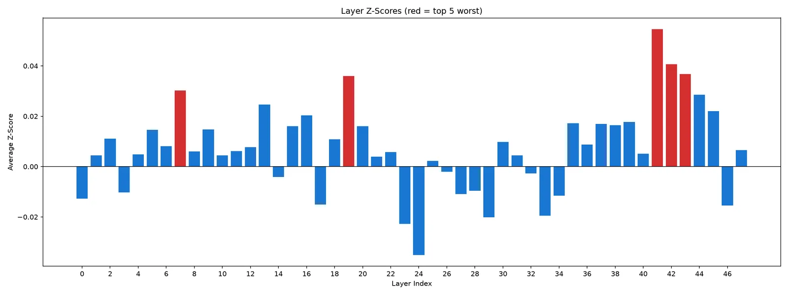
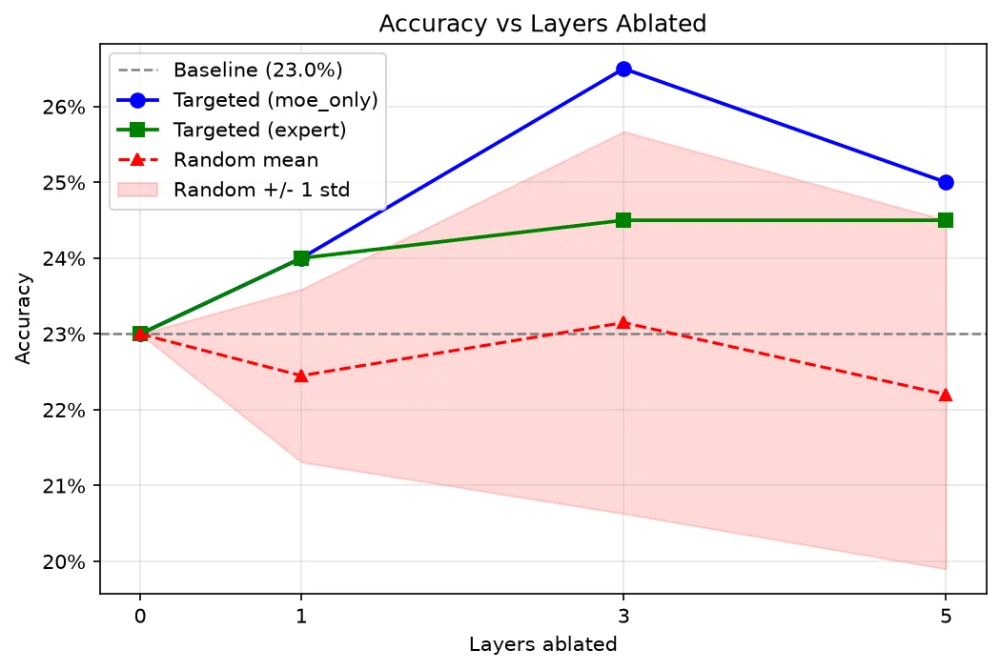

Tracing a vision model's LEGO failures
Qwen3-VL-30B answers about a quarter of LEGO spatial-reasoning questions correctly. We logged which of its 6,144 experts fired on every question, then switched off the layers most tied to wrong answers. It didn't fix the model.
- Result
- Test accuracy rose from 23.0% to 26.5% (p = 0.25, no better than switching off random layers), and holdout fell from 29.0% to 27.0%.
- What I did
- I wrote and ran the experiment code: the benchmark runs, the routing logger (forward hooks on every router), layer scoring, clustering, ablations, and the stats. My scripts are in
scripts/;code/LEGO-Puzzlesis the benchmark's own eval framework. - Role
- Undergraduate researcher, McNair Scholars Program
- Stack
- Python, PyTorch, Hugging Face Transformers, RunPod A100s, NumPy, Pandas, scikit-learn
- Links
- Paper (PDF) Code
The question
Qwen3-VL-30B is a Mixture-of-Experts model. It has 48 decoder layers, each with 128 small "expert" networks, and a router picks 8 of them for every token. So every token leaves a record of exactly which experts handled it.
If the model's spatial mistakes come from a few layers or experts, their routing should look different on questions it gets wrong. Find them, switch them off, and accuracy should go up with no retraining.
We tested this on LEGOLite, a 400-question slice of the LEGO-Puzzles benchmark: 100 questions each on height, position, rotation, and assembly order.
Getting the data
Through the Fireworks API the model scored 31% overall, between Gemini-2.0-Flash (44.25%) and GPT-4o Mini (13.75%). Ordering first came back as 0%. That was a bug in our grading harness, not the model. Re-graded by exact match, it was 14%.
A first check on one 2,768-token question showed image and text tokens use different experts: their top 10 sets shared zero members. That meant image tokens had their own experts, so there was something visual to trace.
On one A100 with the model in 4-bit NF4, we logged all 48 × 128 routing decisions for all 400 questions, twice. The two runs agreed within one point (24.25% and 25.25%).
Finding suspects
We split the 400 questions into a 200-question test set and a 200-question holdout set, balanced by category. Everything in this section only touched the test set.
For every expert we computed a z-score: how many of the questions it fired on were answered wrong, compared with what the model's overall error rate predicts. The formula shrinks experts that only fire a few times, so a rare expert can't look bad by accident. A layer's score is the average over its 128 experts.

Look at the y-axis. The usual bar for an outlier is a z-score of 2, our worst layer scored 0.055, and no single expert crossed 2.
We kept going anyway. Inside each of the five worst layers we built a 128 × 200 fingerprint (which experts fired on which questions) and clustered the experts with k-medoids, using Jaccard distance since each fingerprint is about 94% zeros. The best silhouette score was 0.236, so the clusters overlapped a lot.
Switching them off
We tried three ways of disabling the worst layer (41): skip the whole decoder block, zero only its MoE output, or zero the flagged experts' gate weights and renormalize the rest. Each one is a PyTorch forward hook that's removed after the run, so the model's weights never change. Accuracy went from 23.0% to 22.0%, 24.0%, and 24.0%. None of those changes were significant under McNemar's test.
MoE-only did slightly best, so we scaled it to the worst 1, 3, and 5 layers. As a control, we also switched off the same number of random layers, 10 times each.
| Layers off | Targeted | Random (mean ± sd) | z vs. random | McNemar p |
|---|---|---|---|---|
| 1 | 24.0% | 22.5% ± 1.1% | 1.36 | 0.831 |
| 3 | 26.5% | 23.2% ± 2.5% | 1.33 | 0.248 |
| 5 | 25.0% | 22.2% ± 2.3% | 1.22 | 0.596 |

Three layers looked best: 23.0% to 26.5%, with 17 questions fixed and 10 broken. But McNemar's test gave p = 0.25, and the targeted run didn't beat random removal by a meaningful margin (z = 1.33, against a bar of 2).
The holdout check
The 200 holdout questions had never been used for scoring or clustering. With the same three layers switched off, holdout accuracy went from 29.0% down to 27.0%, so the test-set bump was most likely noise in a 200-question sample.
What it leaves open
Two explanations fit, and our data can't tell them apart:
- The failure is spread out. Spatial reasoning might not live in any small set of experts. That matches Wang et al. (2026), who found MoE routing dominated by a "standing committee" of experts that fire regardless of task.
- Our method was too blunt. Z-scores near 0.05 and weak clusters could mean the signal exists and a correlational score can't see it.
So we wrote it up as a negative result. The follow-up we proposed is activation patching: corrupt the image, then copy the clean run's hidden state back in one layer at a time and see which layer flips the answer back. That would show which layer causes the error. Our correlational scores can't.
The routing logs also led to my next project with a research collaborator and our advisor: predicting expert routing early enough to prefetch the weights.